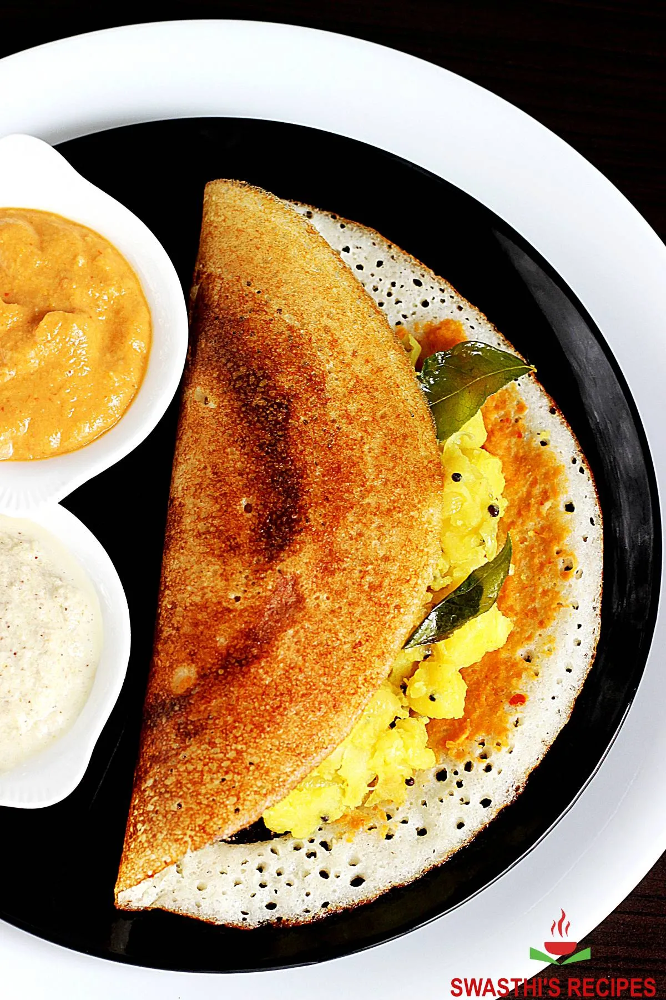

Home
Masala Dosa

Description
Masala Dosa is a popular South Indian dish made from fermented rice and lentil batter, filled with a spiced potato mixture. It's crispy, savory, and often served with chutney and sambar.
How to make Masala Dosa
Making Masala Dosa requires some preparation, but the results are delicious. Below is a detailed ingredient list and step-by-step instructions to help you create this iconic dish:
Masala Dosa Ingredients
- Rice
- Split urad dal (black gram)
- Potatoes
- Onion
- Mustard seeds
- Curry leaves
- Turmeric powder
- Green chilies
- Salt to taste
- Oil or ghee for cooking
- Water
- Chutney (for serving)
- Sambar (for serving)
Masala Dosa Instructions
- Soak rice and urad dal in water for 4-6 hours or overnight.
- Drain and blend the soaked rice and dal with water to form a smooth batter.
- Ferment the batter in a warm place for 8-12 hours or until it doubles in size.
- Boil and mash the potatoes. In a pan, heat oil, add mustard seeds, curry leaves, chopped onions, green chilies, and turmeric powder. Mix in the mashed potatoes and salt.
- Heat a non-stick skillet or tawa. Pour a ladleful of batter and spread it into a thin circle.
- Add a spoonful of the potato filling in the center and fold the dosa over it.
- Cook until golden brown on both sides. Serve hot with chutney and sambar.
Masala Dosa Tips
- Use a non-stick pan for easy flipping.
- Fermentation is key for a crispy dosa, so ensure the batter is well-fermented.
- Adjust the spice level by adding more or fewer green chilies.
- Serve with coconut chutney and sambar for a complete meal.
Masala Dosa Variations
- Plain Dosa: Skip the potato filling for a simple dosa.
- Cheese Dosa: Add grated cheese to the filling for a cheesy twist.
- Onion Dosa: Add finely chopped onions to the batter for extra flavor.
Masala Dosa Serving Suggestions
- Serve with coconut chutney, tomato chutney, and sambar.
- Pair with a side of crispy papad or pickle.
- Enjoy with a cup of filter coffee for a traditional South Indian experience.
Masala Dosa Nutritional Information
One serving of Masala Dosa (without filling) contains approximately:
- Calories: 150
- Carbohydrates: 30g
- Protein: 5g
- Fat: 2g
- Fiber: 2g
Masala Dosa Conclusion
Masala Dosa is a delicious and satisfying dish that is perfect for breakfast or any meal of the day. With its crispy exterior and flavorful potato filling, it's sure to become a favorite in your home. Enjoy your homemade Masala Dosa!
Masala Dosa Storage
Store leftover dosa batter in an airtight container in the refrigerator for up to 2-3 days. Reheat on a skillet before serving. The potato filling can also be stored separately and reheated.